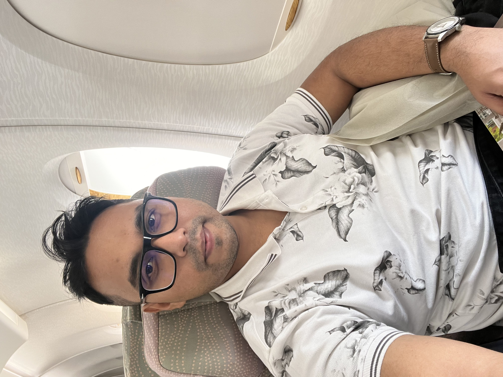
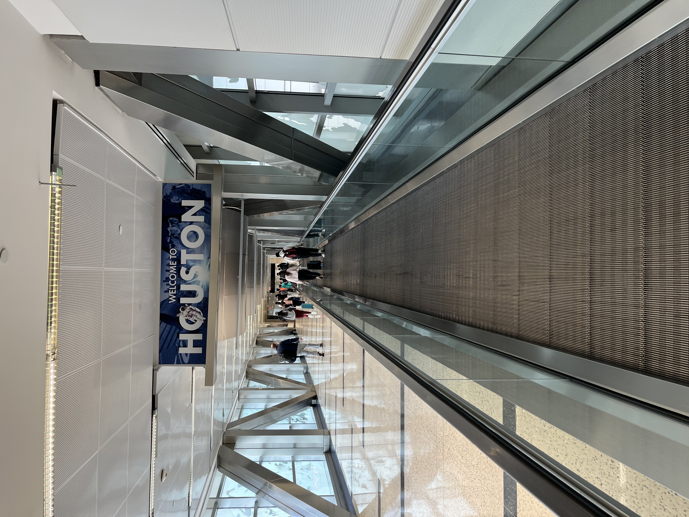
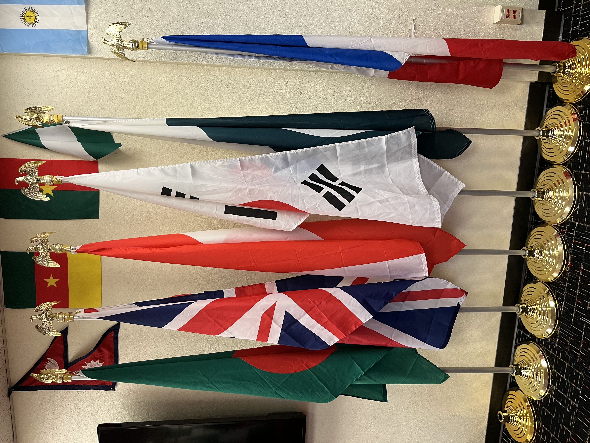
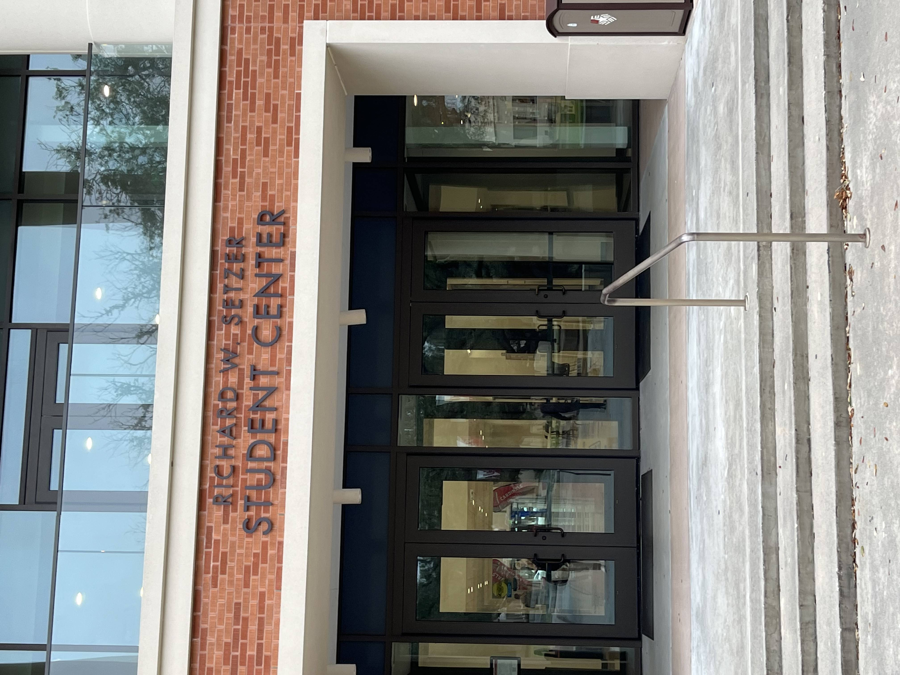
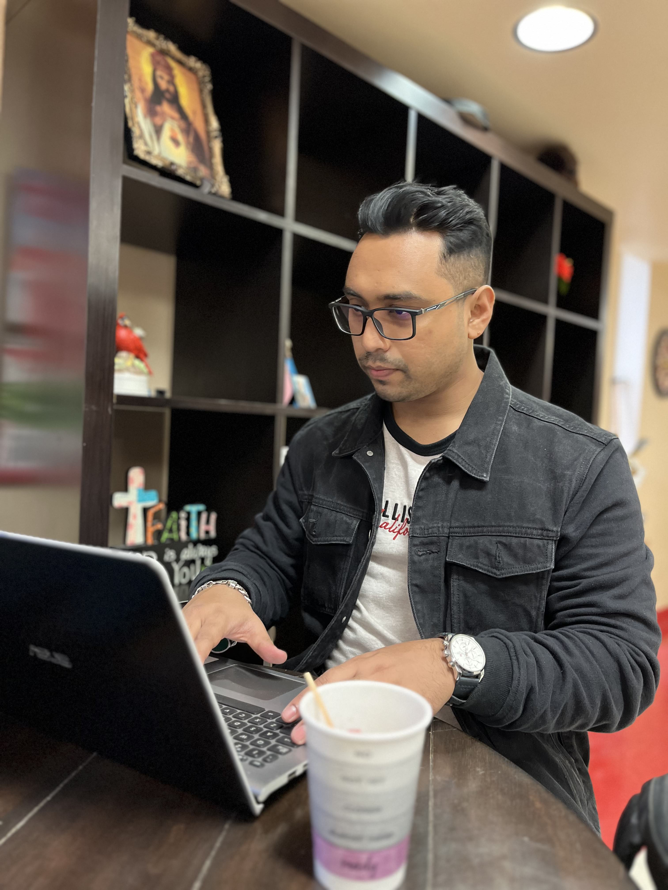

Chasing Dreams: My First Step in America
On January 22, 2023, I landed at George Bush Intercontinental Airport in Houston, Texas—nervous but full of dreams. It was the beginning of my journey toward earning a Master’s degree in Industrial Engineering, and I knew this step would define the rest of my life.
 The airport walkway felt endless, yet I walked it with hope in my heart. Leaving behind my comfort zone in Bangladesh was not easy, but the idea of building a new life and achieving the American dream kept me moving forward.
  I quickly embraced student life—from multicultural exposure to academic challenges. Every moment, every face, and every place reminded me why I came: to grow, to learn, and to make a meaningful mark in this world. This was not just a relocation; it was a rebirth of purpose.